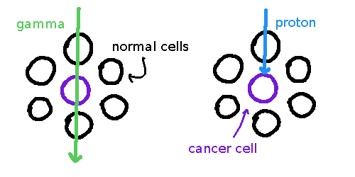

Created: 2023-06-26
Last modified: 2023-07-10
Not all my notes, just tips and other findings that will help guide you.
Research and make notes on the following concepts:
- The use of radioisotopes in diagnostic imaging including gamma cameras and PET scans
- The use of radioisotopes in therapeutic treatments
- The main ways in which radioisotopes are produced for use in medicine
- Proton therapy and Neutron therapy
- Radiation Dosimetry including Absorbed dose and Dose Equivalent.
Proton therapy’s biggest benefit over X-rays → higher precision i.e. less radiation exposure to nearby cells1. However, seems to require an understanding in how X-rays are used in radiotherapy, research first!2
Radiotherapy uses radiation e.g. X-rays for medical therapy e.g. killing cancer. Does so by directing high-doses of radiation at cancer cells, which damages the DNA (mutates base pairs, breaks the backbone, breaks hydrogen bonds), preventing reproduction/causing apoptosis. Indiscriminate, will harm normal cells.3
PET is a type of scanning. Used w/ CT. The Wikipedia article is quite dandy.
Sources don’t really seem to specify, but apparently due to fact that X-rays pass through the tumour, continuing to do damage. Protons don’t.

Essentially, the protons can have an ending point specified. How it does this I don’t know. Also, of course it isn’t that specific (to degree of 1 cell). Might want to have a look at this link ↩
Also, needs to be around the cyclotron. ↩
Note always for cancer, also for killing … other tumours. Not very exciting. ↩
found on spicata.99000000.xyz. no rights reserved.
published by 99 000 000.xyz.